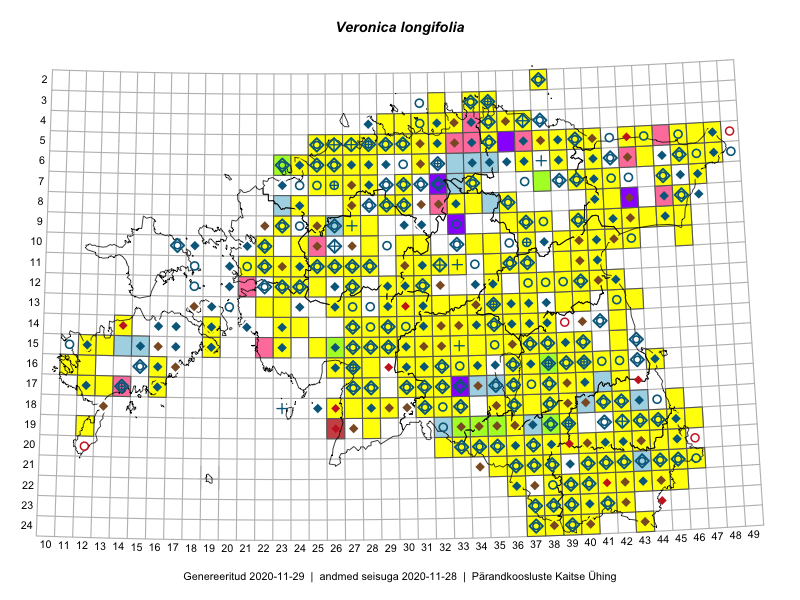

Veronica longifolia
Uuendatud: 2016-12-01
Kaardile koondatud taksonid: Veronica longifolia L.

Kaart põhineb 341 kirjel, neist vaatlusi 340 ja eksemplare 1.
Kuvatud viited 20 esimesele andmebaasikirjele, ülejäänud PlutoFis
- Thea Kull: 2015-07-07: 16-40: ala
- Toomas Kukk, Peedu Saar: 2014-09-23: 07-42: ala
- Rein Kalamees, Kersti Püssa: 2015-08-31: 04-32: ala
- Rein Kalamees, Kersti Püssa: 2015-09-06: 03-32: ala
- Ott Luuk, Peedu Saar: 2015-07-27: 11-35: ala
- Toomas Kukk, Raivo Kalle: 2015-05-11: 09-37: ala
- Peedu Saar: 2015-07-04: 18-45: ala
- Peedu Saar: 2015-07-14: 15-38: ala
- Peedu Saar, Eerik Leibak: 2015-07-30: 16-41: ala
- Peedu Saar, Liina Oja: 2015-06-09: 17-27: ala
- Peedu Saar, Liina Oja: 2015-06-09: 17-28: ala
- Peedu Saar, Liina Oja: 2015-06-11: 15-29: ala
- Peedu Saar, Liina Oja: 2015-06-12: 13-35: ala
- Peedu Saar, Sander Laherand: 2015-06-01: 07-42: ala
- Rein Kalamees, Kersti Püssa: 2015-06-30: 04-31: ala
- Peedu Saar, Liina Oja: 2015-07-21: 06-44: ala
- Ott Luuk, Toivo Sepp: 2015-07-12: 10-31: ala
- Toomas Kukk, Tiit Hallikma: 2015-07-24: 06-41: ala
- Toomas Kukk, Eerik Leibak: 2015-07-29: 16-44: ala
- Tiit Hallikma, Toomas Kukk: 2015-06-10: 15-30: ala